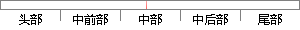

这种方法尽管操作方式复杂，但是却可以获得较为准确的结果。
片段位置图

相似结果|
相似片段 1：，将每个部件进行局部地基检测，并对结果进行对比分析，进而得出影响鉴定仪器的误差，计算出整体的检定误差，判断仪器是否合格 [3]。尽管这种方式较为复杂，但是检定的结果更为准确。4 结语力学计量仪器地基检
|
※ 片段修改建议 ※
近似词参考：- 这种：这类
- 尽管：虽然 只管
- 操作：操纵
- 方式：体例 体式格局 方法
- 复杂：庞大 繁杂
- 但是：可是 然则 然而
- 准确：精确 正确
- 结果：成果 成绩 成效 后果 了局 效果
系统自动生成语句：这类方法虽然操纵体例庞大，可是却可以获得较为精确的成果。
注：本片段修改建议为系统自动生成，仅供参考。